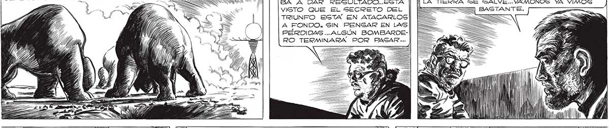
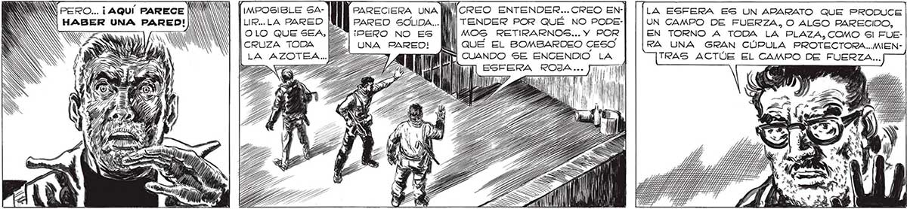

A TIENES RAZON, FAVA. Sl CONSEGUIMOS INFORl , 214 [Me ESTREMECIÍ. LOS "SURBOS” LIMPIABAN LA PLAZA LASTIMA QUE AFLOJARON EL DE CAIDOS. NO LOS LLEVABAN A NINGUNA PARTE.LOS A] / BOMBARDEO CUANDO EMPEZADS Pe" SA A DAR REGULTADO..ESTA JS Y MAR A QUIENES ENVIARON LOGS AVIONES QUIZA LA TIERRA SE SALVE... VAMONOS YA VIMOS SS = VISTO QUE EL SECRETO DEL X= BASTANTE. TRIUNFO ESTA EN ATACARLOS . A FONDO, SIN PENGAR EN LAS PÉRDIDAS... ALGÚN BOMBARDERO TERMINARA POR PAGAR ... ( = _. NN ' | WN m0 ' Aa US | "Y Ml UN bl pá Pira DA LL ¿LISTOS LOS CRO-2 SÍ, SEÑOR] Nvamos. TENDREMOS QUE APURARNOS Sl NUES- NO y ALIS, FRANGOZ E IOÑ ES NS HA DE SER DE ALGUNA UTILIDAD. WN FS de ¡ Mi $ mm ¿e LES lll el mi OR 4h É = GN A a = 2 Y EAS 4 j N Y POSa PARECIERA UNA | PARED SOLIDA... ¡PERO NO ES | UNA PARED! IMPOSIBLE SALIR... LA PARED OLO QUE SEA, ES CRUZA TODA LA AZOTEA... ... ¡[AQUÍ PARECE IN HABER UNA ol e | LA ESFERA ES UN APARATO QUE PRODUCE Tenoee POR QUÉ NO PODE- UN CAMPO DE FUERZA, O ALGO PARECIDO, l MOS RETIRARNOS... Y POR EN TORNO A TODA LA PLAZA, COMO Sl FUE| QUÉ EL BOMBARDEO CESO RA UNA GRAN CÚPULA PROTECTORA...MIENDIN CUANDO SE LL cal TRAS ACTÚE EL CAMPO DE FUERZA... TÍ ESFERA ROJA . e | 5

